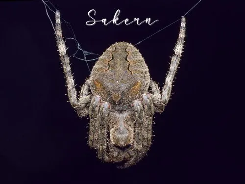

蛛形动物 · 动物界
大腹园蛛 Araneus ventricosus

中国最常见的结圆网蜘蛛之一，雌蛛腹部膨大呈球状，黄昏时在屋檐和树间结出大圆网捕食飞虫，对人基本无害。
- 分类
- 门节肢动物门纲蛛形纲目蜘蛛目科园蛛科属园蛛属
- 栖息环境
- 屋檐、树间、灌丛、草丛等便于结网的场所
- 地理分布
- 中国大部分地区及朝鲜半岛、日本、俄罗斯远东
- 保护级别
- IUCN 暂无评估；中国未列入国家重点保护名录
物种志
大腹园蛛雌蛛体长 20–25 毫米，雄蛛仅 8–10 毫米，雌蛛腹部特别膨大呈球状，背面呈黄褐、灰褐或深褐色，常带有斑纹，头胸部较小，八足粗壮并长有刺毛；腹部末端有纺器，能分泌蛛丝。它是典型的结网型蜘蛛，黄昏时在屋檐、树间、草丛之间结出直径可达数十厘米的大型圆网，白天多躲在网边的缝隙或叶后休息。
它广泛分布于中国各地及东亚地区，捕食蚊、蝇、蛾类等飞行昆虫，对控制害虫有益。交配后雌蛛产下卵囊，每个卵囊内含数百枚卵，常悬挂在网附近，幼蛛孵化后经多次蜕皮长大。大腹园蛛虽然体型较大，但毒性弱，咬伤通常仅相当于蚊虫叮咬，不必恐慌；它的蛛丝强度和韧性也是仿生材料研究关注的对象。
形态与习性
- 食性蚊、蝇、蛾类等飞行昆虫
- 体长雌蛛 20–25 mm，雄蛛 8–10 mm
- 寿命约 1 年，雌蛛产卵后多死亡
- 繁殖卵生，每个卵囊含数百枚卵
- 活动节律黄昏与夜间结网活动，白天躲藏
- 毒性毒性弱，对人基本无害
- 网型大型圆网，直径可达数十厘米
趣味知识
- 大腹园蛛的网呈典型的圆盘状，常在夜间结好，清晨可见露珠缀在网上。
- 雌蛛与雄蛛体型相差悬殊，雌蛛腹部大得像一颗小圆珠。
- 受惊时它会剧烈抖动蛛网，让捕食者一时看不清它的位置。
生态关系
- 捕食 → 家蝇 结网捕食飞虫